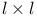
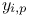
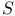
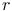
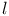
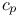
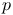
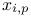

Non-maximum suppression
Non-maximum suppression is a way to eliminate all image information that is not part of the local maxima by setting all non-maximal pixels to zero. Our implementation is based on morphological gray-scale dilation defined by the formula
|  | (1) |
where  is an input image,  is a structuring element, and  is the domain of . Gray-scale dilation is a more general approach than the local maximum method described above, because the structuring element can be of any form in principle.
We first perform a gray-scale dilation of the input image using a structuring element of size with all entries set to zero, where  is a dilation radius given by the user. The approximate molecular positions are extracted by finding pixels in the original image that have intensities equal to corresponding pixels in the dilated image and also have an intensity greater than a user-specified threshold. Essentially, a binary image can be built with all non-maximum pixels set to zero and with all local maxima set to one.
Threshold
Threshold can be specified either as a fixed number or a formula containing image statistics. You can input the formula as a mathematical expression using a set of operators, functions and variables. The formula gets evaluated each time a new frame is processed, so you can have a different threshold for each frame. This way we can deal with intensity changing over time and provide some usable default threshold for unknown images.
Variables
Variables are images you can use in your formula, that are obtained during the filtering operation. There are two variables that are always present:
- I
-
current unfiltered image
- F
-
current filtered image
Filters can provide more image variables. For example wavelet filter provides all the used wavelet planes.
Variables from a filter that is not selected can be used too. Then, the filtering operation will run multiple times: one filtered image is used for detection and other filtered image is used only to evaluate the threshold. Prefix the variable with a short name of the filter and a dot to use a variable from other than the selected filter. For example the threshold formula
| mean(Med.F) |
will evaluate to the mean value of the image filtered with median filter even if your selected filter is for example the wavelet filter.
Functions
The syntax to use the function is the name followed by the argument in parenthesis:
| name(argument) |
Functions can take both an image or a scalar value (where it is meaningfull) as an argument. Expression that evaluate to an image or scalar value can also be used as a function argument.
The supported functions are:
| std | standard deviation |
| mean | mean intensity in the image |
| median | median intensity in the image |
| max | maximum pixel value in the image |
| min | minimum pixel value in the image |
| sum | sum of all the pixel values |
| sub | image with absolute value of each pixel |
Operators
Operators can take images or scalars as operands. The behaviour changes accordingly.
The supported operators are:
- 
-
addition, element by element for images
- 
-
subtraction, element by element for images
-
multiplication, element by element for images
- 
-
division, element by element for images
- ^
-
exponentiation, the second argument can only be a scalar
![[LOGO]]()